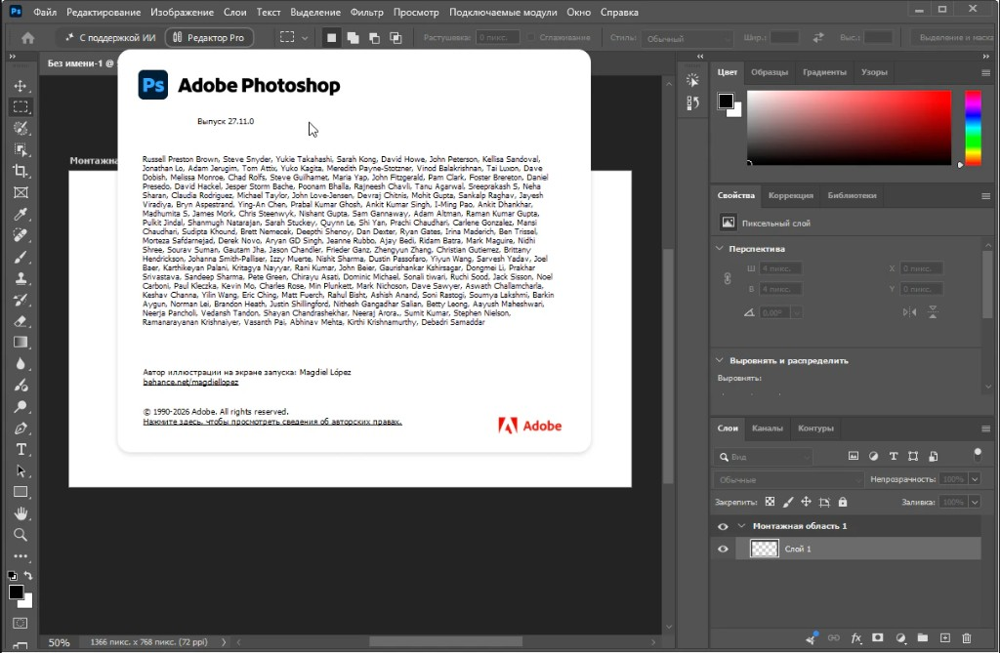

Adobe Photoshop 2026 “Pro for Windows: Camera Raw, Neural Filters, Russian UI” [v27.11]
MoggyDay keeps one stable URL for Adobe Photoshop: EN / RU. Build 2026 v27.11 is the raster editor on the card — layers, masks, Camera Raw, Neural Filters. This page is expanded from that listing so Adobe Photoshop Windows 2026 has screenshots instead of a one-line stub.
Adobe Photoshop 2026 Pro on Windows 10/11 x64: Russian UI, Camera Raw, Neural Filters, ~5.8 GB. Open the program card — do not hunt a zip that only copied this GitHub page.
Who this is for
For people who need a real raster editor on Windows, not a browser “online Photoshop”. The catalog card on moggydayprogram.com is the download. GitHub Pages only hosts this description and screenshots.
What is on the live page
| # | On the card |
|---|---|
| 1 | Layers, masks, Smart Objects |
| 2 | Camera Raw |
| 3 | Neural Filters |
| 4 | Russian interface, Windows x64 |
- Layers, masks, Smart Objects — the reason people still open Photoshop instead of a phone editor.
- Camera Raw — fix exposure before pixel retouch; fewer artifacts on skin and sky.
- Neural Filters — local filters from the 2026 line; cloud Firefly extras need an Adobe account.
- Russian UI — installed with the build. Cyrillic in the canvas still needs system fonts.
Download
- Open Adobe Photoshop 2026 “Pro for Windows: Camera Raw, Neural Filters, Russian UI” [v27.11] or Adobe Photoshop 2026 «Pro для Windows: Camera Raw, Neural Filters, русский интерфейс» [v27.11].
- Stay on moggydayprogram.com.
- Use the primary button on that card. Prefer MoggyDay Launcher if the archive is large — resume after a dropped connection.
- After a catalog update, reload the same Photoshop URL.
RU
Adobe Photoshop 2026 Pro для Windows (v27.11): слои, Camera Raw, Neural Filters, русский интерфейс, около 5.8 ГБ.
Adobe Photoshop 2026 «Pro для Windows» [v27.11] · хаб Adobe · графика
Official links
Queries
- adobe photoshop windows
- photoshop 2026
- photoshop на русском
- adobe photoshop download
- photoshop camera raw
- photoshop neural filters
- photoshop for windows 11
- photoshop 27.11
- psd editor windows
- moggyday photoshop
More programs on MoggyDay


Adobe Photoshop 2026 «Pro для Windows: Camera Raw, Neural Filters, русский интерфейс» [v27.11]
MoggyDay держит один постоянный адрес карточки Adobe Photoshop: RU / EN. Сборка 2026 v27.11 — растровый редактор: слои, маски, Camera Raw, Neural Filters. Эта страница — расширенное описание с вашими скриншотами, а не однострочный stub.
Adobe Photoshop 2026 Pro на Windows 10/11 x64: русский интерфейс, Camera Raw, Neural Filters, около 5.8 ГБ. Качайте с карточки программы — не с «клона», который только скопировал этот текст.
Для кого это
Для тех, кому нужен настоящий растровый редактор на Windows, а не браузерный «онлайн-фотошоп». Скачивание — карточка на moggydayprogram.com. GitHub Pages хранит только описание и скриншоты.
Что на живой карточке
| # | На карточке |
|---|---|
| 1 | Слои, маски, смарт-объекты |
| 2 | Camera Raw |
| 3 | Neural Filters |
| 4 | Русский интерфейс, Windows x64 |
- Слои, маски, смарт-объекты — зачем Photoshop всё ещё открывают вместо редактора в телефоне.
- Camera Raw — экспозиция до пиксельной ретуши, меньше артефактов на коже и небе.
- Neural Filters — локальные фильтры линейки 2026; облачный Firefly без аккаунта Adobe не обещаем.
- Русский интерфейс ставится вместе со сборкой. Кириллица в макете — если в системе есть шрифты.
Скачать
- Откройте Adobe Photoshop 2026 «Pro для Windows: Camera Raw, Neural Filters, русский интерфейс» [v27.11] или Adobe Photoshop 2026 “Pro for Windows: Camera Raw, Neural Filters, Russian UI” [v27.11].
- Оставайтесь на moggydayprogram.com.
- Жмите основную кнопку на карточке. Для большого архива удобнее MoggyDay Launcher — докачка после обрыва сети.
- После обновления каталога открывайте тот же URL Photoshop.
EN
Adobe Photoshop 2026 Pro for Windows (v27.11): layers, Camera Raw, Neural Filters, Russian UI, about 5.8 GB.
Adobe Photoshop 2026 “Pro for Windows” [v27.11] · Adobe hub · graphics
Официальные ссылки
Запросы
- adobe photoshop windows
- photoshop 2026
- photoshop на русском
- скачать photoshop
- photoshop camera raw
- photoshop neural filters
- photoshop для windows 11
- photoshop 27.11
- редактор psd windows
- moggyday photoshop